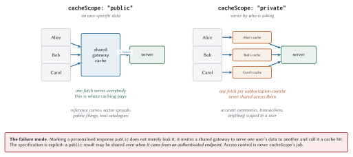
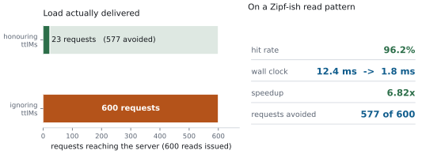

Resources: The Context Layer
Doc is wrong, of course. They need roads constantly for the rest of the trilogy. But the line captures a real feeling, which is the moment you realise the constraint you had been designing around is not actually the constraint.
With resources, the constraint people design around is “how do I get data to the model”. The actual constraint is “how do I get data to the model without spending the context budget on data it will not read”. Those are different problems, and confusing them is how you end up with a 200,000-token context window and no room to think in.
What a resource is, and what it is not
A resource is addressable, readable context, identified by a URI.
The distinction from tools is about control, and it is worth being precise because the specification is:
| Tools | Resources | |
| Controlled by | The model | The application |
| Invoked when | The model decides | The host decides |
| Side effects | Expected | None |
| Question | “Do something” | “Give me something to read” |
That first row is why resources exist at all. A user picking three documents from a file tree is doing something a model should not be doing on their behalf, and a host that wants to attach the current file to the conversation should not have to persuade a language model to call a tool.
Mechanics
Four methods, and they should look familiar by now.
resources/list -> the concrete resources available
resources/templates/list -> parameterised families of resources
resources/read -> the contents of one URI
subscriptions/listen -> tell me when these changeA read looks like this:
{
"jsonrpc": "2.0",
"id": 2,
"result": {
"resultType": "complete",
"contents": [
{
"uri": "meridian://accounts/ACC-1042/summary",
"mimeType": "application/json",
"text": "{\"accountId\":\"ACC-1042\",\"tier\":\"B\",...}"
}
],
"ttlMs": 900000,
"cacheScope": "private"
}
}Two rules worth internalising.
A read may return several contents. Reading a directory resource can legitimately return every file in it. Useful, and a good way to accidentally put four megabytes into a context window.
An empty contents array is forbidden for a nonexistent resource. It is ambiguous: does the resource exist and have no content, or not exist? Return -32602 instead.
Templates
Enumerating 240 accounts as concrete resources would be silly. A template describes the family instead, using RFC 6570 URI templates:
@server.template(
"meridian://accounts/{account_id}/summary",
"Account summary",
description="Static profile for one account. Cheap, stable, private.",
mime_type="application/json",
ttl_ms=900_000,
cache_scope="private",
)
def account_summary(ctx: RequestContext, uri: str, params: dict):
account = ACCOUNTS.get(params["account_id"])
if account is None:
raise ResourceNotFound(uri)
return json.dumps(account.to_json(), separators=(",", ":"))Level 1 templates (a variable inside a path segment) cover essentially every real case. Meridian compiles them to a regex once, at registration:
def __post_init__(self) -> None:
# RFC 6570 level 1 is all the book needs: {var} inside a path.
pattern = re.escape(self.uri_template)
pattern = re.sub(r"\\\{(\w+)\\\}", r"(?P<\1>[^/]+)", pattern)
self._regex = re.compile("^" + pattern + "$")Designing URIs for machines and humans
URIs are an interface, and unlike most interfaces this one is read by three audiences: your code, the model, and a human staring at an audit log at midnight. Design accordingly.
Hierarchical and guessable. meridian://accounts/ACC-1042/summary tells you what it is without documentation. meridian://r/4a7f2b does not.
Stable. A resource URI ends up in conversation history, in caches, in audit logs, and in the model’s working memory. Changing the scheme is a breaking change even though nothing in the protocol says so.
Scoped, so you cannot express a cross-tenant reference.
Pagination is a requirement, not a nicety. Meridian’s market-data server has 40 benchmark resources and a page size of 25, which forces the pagination path to be exercised rather than theoretical:
def test_marketdata_paginates_its_resource_list(self):
client = Client(InProcessTransport(marketdata.build_server()))
first = client.call("resources/list")
self.assertIn("nextCursor", first)
everything = client.list_resources()
self.assertGreater(len(everything), 25)Cursors are opaque. Meridian uses an offset because its catalogue is small and stable, and says so in the code, because an offset over a mutable table skips and duplicates rows when the underlying set shifts between pages. If your list comes from a database, encode a sort key instead.
The 2026 caching model
Here is the part of the chapter that will pay for the book.
Six operations carry caching hints: server/discover, tools/list, prompts/list, resources/list, resources/templates/list, and resources/read. Two fields:
ttlMs-
How long the client may consider this fresh. Semantically identical to HTTP’s
max-age. cacheScope-
"public"or"private". Who may hold the cached copy.
It is HTTP caching, and that is a compliment. HTTP caching is a design that has survived thirty years of adversarial contact with reality.
TTL is a freshness hint, not a polling interval
The most common mistake, and it is a self-inflicted denial of service.
The correct loop is: need the data, check freshness, refetch only if stale.
def get(self, server, method, params, auth_context="anon"):
if method not in CACHEABLE_METHODS:
self.stats.uncacheable += 1
return None
# A retry carrying MRTR fields is a different question with the same name.
if "inputResponses" in params or "requestState" in params:
self.stats.uncacheable += 1
return None
key = cache_key(server, method, params, auth_context)
now = self._clock()
with self._lock:
entry = self._entries.get(key)
if entry is None:
self.stats.misses += 1
return None
if not entry.fresh_at(now):
self.stats.stale += 1
del self._entries[key]
return None
self.stats.hits += 1
return entry.valueNote the second check. Results produced by an MRTR retry are never cacheable, because they depend on inputResponses, which is not part of the cache key. Caching one would serve one user’s answer to another user’s question.
Three edge cases the specification pins down, and Meridian tests all three:
ttlMs: 0means immediately stale. Do not store it.ttlMsabsent means assume 0. This should only happen with older servers.Negative
ttlMsis ignored, treated as 0.
cacheScope is an access-control decision

public means the response contains nothing user-specific, so any client, gateway, or proxy may store it and serve it to anybody.
private means it may be reused only within the same authorization context. Different token, different cache.
The trap is stated plainly in the specification and is worth repeating: a public response may be shared even when it came from an authenticated endpoint. Authentication does not make a response private. Marking it private does.
So mislabelling a personalised response as public does not merely leak it. It instructs a shared gateway to serve one user’s data to another and report a cache hit while doing so.
Meridian takes the conservative line and keys every entry by principal, public or not:
def cache_key(server, method, params, auth_context):
"""Method plus the params that affect the answer, plus who is asking.
`auth_context` is folded in unconditionally rather than only for `private`
entries. Doing it the other way round means a single mislabelled response
leaks across users, and the cost of being wrong is far higher than the cost
of a few duplicate entries.
"""That is a deliberate trade. It gives up gateway-level sharing of public resources in exchange for making a mislabelling bug harmless. For a financial application that is obviously right. For a public documentation server it may not be, and you should make the choice consciously rather than inherit mine.
What it is worth

Read the middle row again. 577 of 600 requests never happened. On loopback that saves 10 milliseconds. Across a 68 ms cross-region hop it saves 39 seconds.
Invalidation
TTL and change notifications are complementary, and the specification is explicit that a server may provide either or both.
TTL alone: the client refetches when stale. Simple, and it may serve stale data for up to
ttlMs.TTL plus
listChanged: the notification invalidates immediately, and the TTL stops needless refetching in between.
def on_notification(self, msg: dict) -> None:
"""Turn a change notification into a cache invalidation.
This is the whole reason `listChanged` and `ttlMs` coexist. The TTL
stops you refetching while nothing has changed; the notification stops
you serving stale data the moment something has.
"""
method = msg.get("method", "")
if method == "notifications/tools/list_changed":
self.cache.invalidate_method(self.label, "tools/list")
elif method == "notifications/resources/updated":
uri = (msg.get("params") or {}).get("uri")
if uri:
self.cache.invalidate_uri(self.label, uri)Subscribing is a subscriptions/listen request with a filter:
{
"jsonrpc": "2.0",
"id": 4,
"method": "subscriptions/listen",
"params": {
"notifications": {
"resourcesListChanged": true,
"resourceSubscriptions": ["meridian://accounts/ACC-1042/summary"]
}
}
}Two rules govern that stream, and they exist because stdio multiplexes everything onto one pipe:
The server sends only what was requested. Not “everything it might like”. A subscriber who asked for tool changes never sees resource updates.
The acknowledgement comes first and carries the subscription id. Everything afterwards is tagged with it, so a client with two open subscriptions can demultiplex.
def test_acknowledged_first_then_only_requested_types(self):
...
first = received[0]
self.assertEqual(first["method"],
"notifications/subscriptions/acknowledged")
self.assertEqual(
first["params"]["_meta"]["io.modelcontextprotocol/subscriptionId"], 42)
# A prompts change was never requested, so it must not be delivered.
server.notify_list_changed("prompts")
server.notify_list_changed("tools")
...
self.assertIn("notifications/tools/list_changed", methods)
self.assertNotIn("notifications/prompts/list_changed", methods)The acknowledgement also reports the subset the server actually agreed to honour, which is how a client learns that the server does not support resource subscriptions rather than waiting forever for updates that are never coming.
Who chooses what goes into context
Three strategies, three cost profiles, and most applications need all three.
| Strategy | How it works | Token cost |
| User-driven | A picker, a file tree, an @-mention | Exactly what was chosen. Predictable, and usually right |
| Model-driven | Resource links in tool results; the model asks for what it wants | One extra round trip per fetch, but only fetches what it needs |
| Host policy | Always attach the current file, the system prompt, the last N turns | Constant per turn, and the easiest to let grow silently |
The model-driven route is worth a note. A tool can return a link rather than the content:
{
"type": "resource_link",
"uri": "meridian://filings/FIL-2000",
"name": "FIL-2000",
"description": "10-K, fiscal 2025, 284 pages",
"mimeType": "application/json"
}The model sees that a 284-page filing exists and decides whether it wants it. That is one extra round trip if it does, and zero tokens if it does not, which is usually the better trade for large documents. Chapter 13 covers when to embed instead.
Anti-patterns
Five, in rough order of how often I encounter them.
Dumping a database as resources. One resource per row, ten thousand rows. The list response alone exhausts the context window. If your resource list is longer than a person would scroll, it should be a template plus a search tool.
Ignoring pagination. Both directions. Servers that return everything, and clients that read page one and stop. Meridian’s client walks to the end and caches each page under its own cursor.
Cross-tenant URIs. Covered above. Authorize on every read.
cacheScope: public on anything personalised. Covered above, and it is a data breach rather than a performance bug.
Returning enormous blobs with no size hint. The size field exists. Populate it. A host that knows a resource is 4 MB before reading it can decide not to, and a host that finds out afterwards has already spent the budget.
Meridian’s resources
| Resource | What | TTL | Scope |
accounts/{id}/summary |
Account profile | 15 min | private |
filings/{id} |
Public regulatory filing | 24 h | public |
risk/model-card |
How the score works | 7 d | public |
transactions/{id} |
One transaction | 30 s | private |
market/curve |
Reference rates | 1 h | public |
market/benchmark/{...} |
40 sector benchmarks | 2 h | public |
The spread of TTLs is the interesting part, and each one is an argument:
transactions gets 30 seconds because a transaction under active review changes state and stale data would mislead a compliance officer.
filings gets 24 hours and public because a filed 10-K is immutable and identical for everybody. This is the row where a shared gateway cache does real work.
model-card gets 7 days because it changes when the model is retrained, which is quarterly.
What to remember
Resources are application-driven; tools are model-controlled. The question is who decides when it happens.
Templates over enumeration. Pagination is required, and cursors are opaque.
Six operations carry
ttlMsandcacheScope.TTL is a freshness hint. Never poll on it.
MRTR retries and interim results are never cacheable.
cacheScope: publicmay be shared across users even from an authenticated endpoint. It is an access-control decision.Honouring TTL avoided 577 of 600 requests on a realistic read pattern, a 96.2 % hit rate.
Notifications invalidate; TTL prevents needless refetching between them. The server sends only the types the client asked for.
Authorize every read. Populate
size. Do not dump your database.
Next: prompts, the primitive everybody skips, and the one that quietly standardises a workflow across three teams.